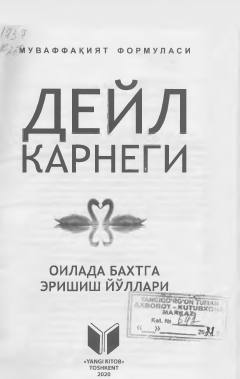

OBOila qurish, er-xotin munosabatlari va baxtli turmush sirlari haqida qo'llanma.
Mazkur kitobda oilaviy hayotni yanada baxtli qilish, er-xotin munosabatlari, o'zaro hurmat va farzandlar tarbiyasi bo'yicha muhim tavsiyalar berilgan. Muallif turmushdagi murakkab masalalarni hayotiy misollar va tarixiy shaxslarning taqdirlari orqali tahlil qiladi. Asar keng kitobxonlar ommasiga mo'ljallangan.